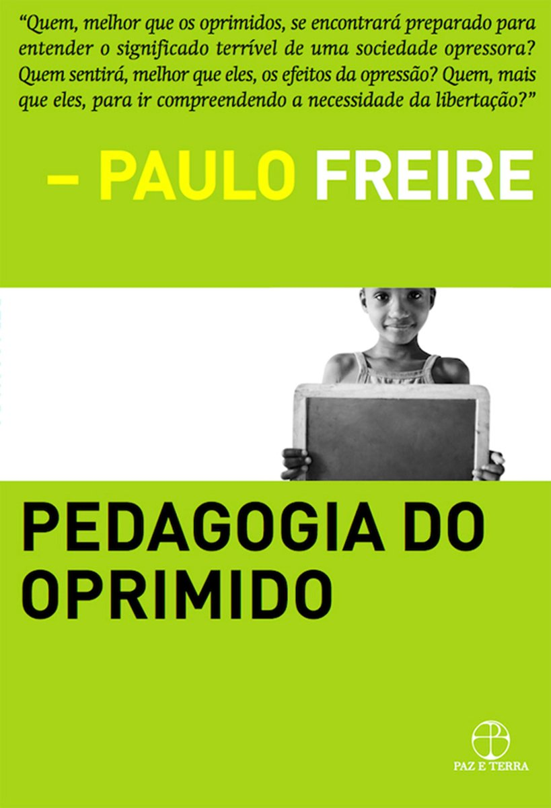

| Alguns Livros de Paulo Freire | ||||||
|---|---|---|---|---|---|---|
| Pedagogia da Autonomia | Pedagogia do Oprimido | Educação e Mudança | Professora, sim; tia, não | Política e Educação | A Educação na Cidade | |
|  |  |
|||||
| Pedagogia e Solidariedade | Extensão ou comunicação? | Por uma Pedagogia da Pergunta | Pedagogia dos Sonhos Possíveis | Essa Escola Chamada Vida | Pedagogia: Diálogo e Conflito | |